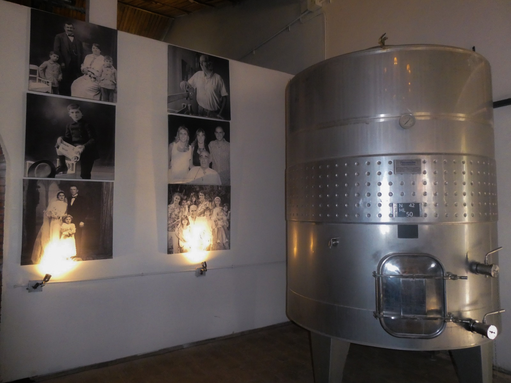
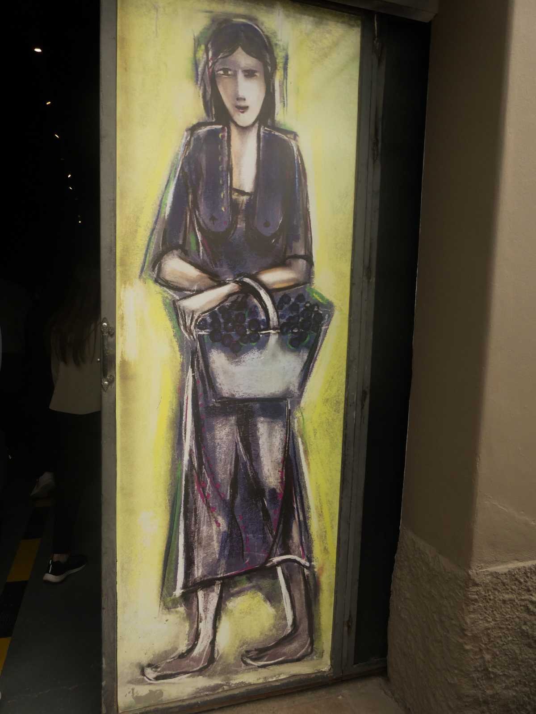
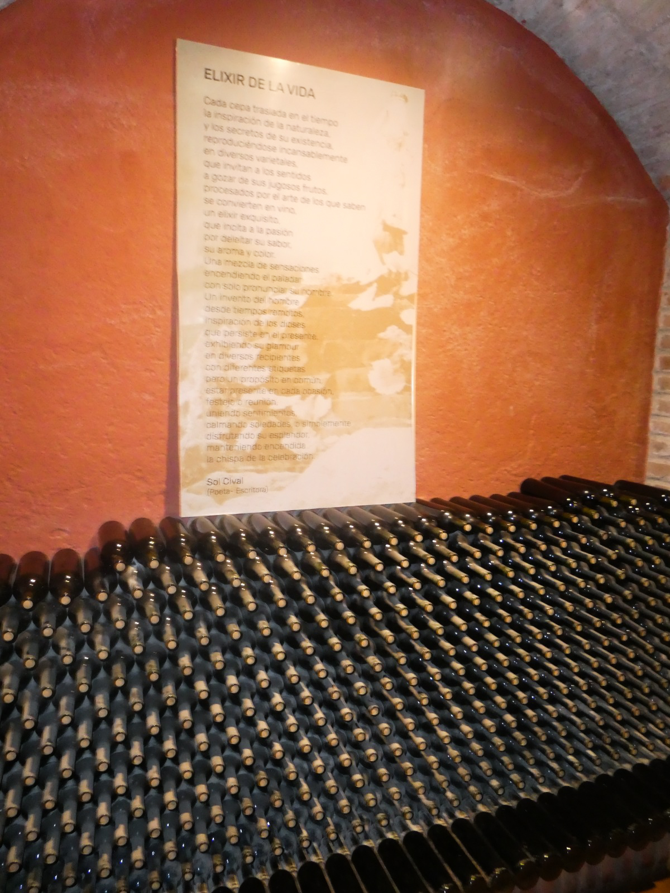

BODEGA LABIANO
UBICACIÓN
Ubicada en Cubillos 3850, distrito de Rama Caída, departamento de San Rafael (provincia de Mendoza, Argentina).
HISTORIA
A comienzos del siglo XX, los españoles Hipólito Labiano y Juana emigraron a la Argentina. Aunque volvieron por un tiempo a su país de origen, el encanto y las posibilidades que ofrecía Mendoza los motivaron a regresar. Finalmente, en 1925 se establecieron en Rama Caída, San Rafael, lugar donde dieron inicio a su proyecto vitivinícola plantando sus primeras viñas y construyendo su propia bodega.
1925: Hipólito y Juana Labiano se establecen en Rama Caída y comienzan su historia vitivinícola.
1972: Se funda Francisco Labiano e Hijos S.A., consolidando el crecimiento familiar.
2002: La bodega abre sus puertas al turismo, compartiendo su historia y sus vinos con visitantes.
2026: Tras cinco generaciones, Bodega Labiano mantiene viva su tradición familiar, uniendo historia, tierra y futuro.

PROCESO VITIVINÍCOLA
1. VENDIMIA (COSECHA)
- Recolección: Se realiza cuando la uva alcanza su punto óptimo de madurez (azúcares y acidez).
- Método: Puede ser manual o mecánica, cuidando de no dañar el fruto.
2. DESPALILLADO Y ESTRUJADO
- Despalillado: Se separan los granos de uva del raspón (las ramas del racimo) para evitar sabores amargos.
- Estrujado: Se rompe la piel de la uva (hollejo) para liberar el jugo o mosto, sin triturar las semillas.
3. MACERACIÓN Y FERMENTACIÓN ALCOHÓLICA
- Maceración: En vinos tintos, el mosto permanece en contacto con los hollejos para extraer color, aromas y taninos. En blancos suele prensarse antes.
- Fermentación Alcohólica: Las levaduras transforman los azúcares del mosto en alcohol y dióxido de carbono. Se controla la temperatura (generalmente entre 25°C y 30°C)
4. PRENSADO Y DESCUBE
- Descube: Se separa el líquido principal (vino yema) de los sólidos restantes.
- Prensado: Se presionan los hollejos para extraer el vino de prensa.


5. FERMENTACIÓN MALOLÁCTICA
- Las bacterias transforman el ácido málico (más agresivo) en ácido láctico (más suave), reduciendo la acidez del vino.
6. CRIANZA Y ENVEJECIMIENTO
- Maduración: El vino reposa en barricas de roble, tanques de acero inoxidable o piletas de concreto según el estilo buscado.
- Se afina posteriormente en botellas colocadas en posición horizontal.
7. CLARIFICACIÓN, FILTRADO Y EMBOTELLADO
- Clarificación y filtrado: Se eliminan las partículas e impurezas suspendidas mediante agentes clarificantes.
- Embotellado: Se sella la botella (con corcho u otro cierre) para su distribución comercial.
TIPOS DE UVAS
UVAS TINTAS
- Malbec: El emblema provincial y nacional, reconocido por sus vinos frutados, de gran cuerpo y elegancia.
- Bonarda: La segunda variedad tinta más cultivada en Mendoza (más de 13.000 hectáreas), tradicionalmente usada en cortes y cada vez más valorada como varietal puro.
- Cabernet Sauvignon: Muy importante por su estructura y capacidad de guarda.
- Syrah: Aporta notas especiadas y de frutas oscuras.
- Merlot y Petit Verdot: Adaptadas con éxito a diferentes zonas de la provincia.
UVAS ROSADAS Y CRIOLLAS
- Cereza: Una de las uvas rosadas con mayor superficie en la región, muy utilizada en parrales.
- Criolla Grande: Otra variedad criolla de piel rosada con fuerte presencia en los viñedos locales.
UVAS BLANCAS
- Chardonnay: La uva blanca más destacada en zonas de mayor altitud.
- Torrontés: Conocida por su perfil aromático y floral.
- Pedro Giménez: Un varietal blanco tradicional de la viticultura argentina que está recuperando protagonismo por su frescura.
- Otras blancas: Sauvignon Blanc, Semillón y Viognier.
FOTOS Y ANÉCDOTAS
FOTOS
Fotos en orden cronológico de las actividades realizadas. En formato de computadora o pantalla horizontal, una breve descripción de cada imagen aparecerá.
ANÉCDOTAS
Les preguntamos a chicos de diferentes cursos qué opinaban del viaje y cuáles fueron sus actividades favoritas.
A continuación, pequeñas anécdotas en sus palabras:
1. CANOPY Y VISTAS
Anónimo - 5° 1° "TC"
"La actividad que más me gustó hacer fue la de canopy (tirolesas) en el Parque Aéreo Fly por las tremendas vistas. Linda experiencia."
2. RAFTING Y AL AGUA PATO
Anónimo - 5° 1° "TC"
"Lo mejor del viaje fue el rafting, sin duda. Estar al frente en la balsa y sentir el agua fría de montaña mientras remábamos fue épico. Me acuerdo cuando chocamos contra otro embalse, varios chicos se cayeron al agua y luego los ayudamos a subir de nuevo. Re copado."
3. CANOPY Y VÉRTIGO
Anónimo - 5° 1° "TC"
"Estuvo muy lindo. Lo que sí, te daba cada vez más miedo mientras subías la montaña. Por más que sabías que todo tenía seguridad la cabeza te hacía pensar que ibas a caerte. Pero lo volvería a hacer."
4. BODEGA
Anónimo - 5° 1° "TC"
"Lo que más me gustó hacer fue ir a la bodega Labiano. Además de conocer el proceso del vino observando la maquinaria desde cerca y con la explicación de la guía, pudimos degustar chocolates y aceites regionales. La fuente obviamente no era de vino real."
5. RAFTING SIN REMAR Y CITY TOUR
Anónimo - 4° 2° "TAE"
"Me gustó el rafting ya que fue la primera vez que hacía ese deporte y lo encontré muy divertido, además de que en mi caso a mi no me tocó remar y solo iba en el medio. También porque, en un momento, como que no llegaron a doblar bien y nos chocamos contra la montaña."
"Me gustó ir al centro de San Rafael porque nos dieron alrededor de una hora y media para recorrerlo sin supervisión, y pude comprar muchas cosas como cartas de Pokémon y figuras de esta misma caricatura."
6. CONVIVENCIA ENTRE CURSOS
Anónimo - 4° 2° "TAE"
"Estuvo muy buena la convivencia que tuvimos con otras chicas y chicos de otro curso, a pesar de que antes del viaje casi ni nos hablaramos, ahora puedo decir que hice nuevas amistades gracias a las experiencias que nos brindo el viaje."
7. FUERA DE LA COSTUMBRE
Anónimo - 4° 2° "TAE"
"Lo más bonito del viaje fue sin duda el paisaje, era algo muy diferente a lo que estoy acostumbrada a ver. Otra experiencia buena del viaje fueron la mayoría de actividades, las que más me gustaron a mí fueron las tirolesas, los puentes colgantes y el rafting."
8. CANOTAJE Y REPRESA
Anónimo - 4° 2° "TAE"
"Lo que más me gustó del viaje fue cuando hicimos canotaje porque fue muy relajante ver el agua y los lindos paisajes. Me encantó ver la represa mientras el guía nos contaba su historia. Sin duda una de las experiencias más lindas de mi vida."
9. NUEVAS EXPERIENCIAS
Anónimo - 5° 1° "TG"
"Lo que me gustó del viaje fueron las nuevas experiencias vividas, el poder conocer una parte de argentina, y conocer gente nueva"
10. UNA HERMOSA OPORTUNIDAD
Anónimo - 5° 1° "TG"
"Mi experiencia en el viaje a Mendoza fue muy hermosa y especial. Disfruté mucho de cada una de las actividades que realizamos, ya que fueron momentos únicos que pude compartir con mis compañeros. Fue una experiencia diferente, llena de aprendizajes, risas y recuerdos que voy a guardar con mucho cariño.
Una de las cosas que más me gustó fue poder conocer un lugar diferente dentro de nuestro propio país. Me pareció muy interesante descubrir nuevas costumbres, tradiciones y formas de vivir, ya que aprendí sobre una cultura distinta a la que estoy acostumbrada.
También me encantó conocer más sobre Mendoza, especialmente su relación con el vino, sus viñedos y todo el trabajo que hay detrás de su elaboración. Pude conocer lugares y cosas que antes no sabía, y eso hizo que el viaje fuera todavía más interesante. Además, compartir todas estas experiencias con mis compañeros hizo que el viaje fuera mucho más lindo. Cada actividad, cada paseo y cada momento compartido se convirtió en un recuerdo especial que seguramente voy a recordar durante mucho tiempo.
En conclusión, fue un viaje que disfruté muchísimo, no solamente por los lugares que conocí, sino también por todo lo que aprendí. Me llevo nuevos conocimientos, experiencias y recuerdos muy lindos. Sin dudas, fue una oportunidad hermosa que me permitió conocer un poquito más de la diversidad cultural que tenemos en nuestro país."
MAPA DE RUTA
Mapa de la ruta realizada desde Concordia a San Rafael.